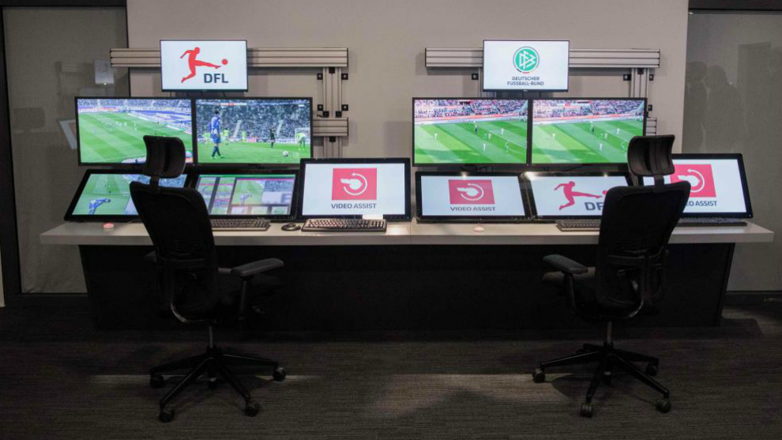
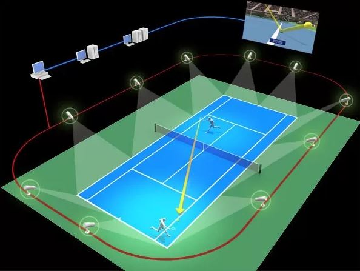

Descubre cómo la tecnología está transformando la práctica deportiva.
Los avances tecnológicos están transformando la industria deportiva en todos los aspectos, desde el rendimiento de los atletas hasta la experiencia de los fanáticos.
En esta página exploraremos cómo los avances tecnológicos están mejorando el rendimiento de los atletas y cambiando la forma en que se practican los deportes.
Descubre algunos de los avances más conocidos y/o importantes de la tecnología en el deporte:
Los monitores de actividad han revolucionado el seguimiento del rendimiento deportivo. Estos dispositivos portátiles, como relojes inteligentes y pulseras de fitness, permiten a los atletas y entrenadores recopilar datos precisos sobre la frecuencia cardíaca, la distancia recorrida, las calorías quemadas y más. Esto es esencial para ajustar el entrenamiento y mejorar el rendimiento.
La realidad virtual (RV) ha encontrado su lugar en el mundo del deporte al proporcionar experiencias inmersivas para los atletas y los fanáticos. Los atletas pueden utilizar RV para entrenar en entornos virtuales que simulan condiciones reales, lo que les permite mejorar su toma de decisiones y habilidades. Además, los fanáticos pueden experimentar los eventos deportivos desde la comodidad de sus hogares a través de transmisiones de RV, brindando una nueva dimensión a la visualización de deportes.
El análisis deportivo avanzado utiliza tecnologías como sensores y cámaras de alta velocidad (Las cámaras de alta velocidad (cámara lenta) se utilizan donde se analiza el movimiento o el comportamiento del material que no puede ser detectado por el ojo humano o por cámaras convencionales.) para recopilar datos detallados durante los eventos deportivos. Estos datos se utilizan para evaluar el rendimiento de los atletas, identificar áreas de mejora y tomar decisiones tácticas. El análisis deportivo ha revolucionado deportes como el fútbol y el baloncesto, donde se utilizan datos para optimizar estrategias y tácticas.
Los avances tecnológicos en el deporte tienen un impacto significativo en varios aspectos y estas son algunas de las más controversiales.
La implementación del Video Assistant Referee (VAR) en el fútbol ha generado un gran impacto y controversia en el mundo deportivo. El VAR utiliza tecnología de video para revisar decisiones arbitrales, como goles, penales y tarjetas rojas, y corregir errores evidentes. Si bien el objetivo es mejorar la precisión, ha llevado a debates sobre la interrupción del flujo del juego y la interpretación de las jugadas.
Además del VAR, otras tecnologías han generado controversia en diferentes deportes. Por ejemplo, en el tenis, la revisión electrónica de jugadas (Hawkeye) ha llevado a discusiones sobre la precisión de las decisiones. En el ciclismo, el uso de bicicletas eléctricas ha generado preocupaciones sobre el fraude deportivo. Estos ejemplos demuestran cómo la tecnología puede tener un impacto significativo en la integridad y la experiencia del deporte.
El futuro del deporte seguirá siendo impulsado por avances tecnológicos emocionantes. Si bien es difícil predecir con certeza cómo se desarrollarán estas tecnologías, podemos vislumbrar algunas tendencias clave. Descubre algunas de las aplicaciones más comunes de la tecnología en el deporte:
Es importante destacar que cualquier avance tecnológico en el deporte también plantea desafíos éticos y de seguridad que deben abordarse cuidadosamente. La conversación sobre la implementación de nuevas tecnologías en el deporte debe ser equitativa y considerar el bienestar de los atletas y la integridad de la competición.